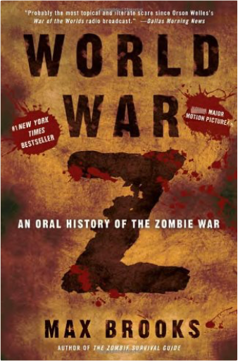 World War Z: An Oral History of the Zombie WarMax Brooks “The end was near.” —Voices from the Zombie War
The Zombie War came unthinkably close to eradicating humanity. Max Brooks, driven by the urgency of preserving the acid-etched first-hand experiences of the survivors from those apocalyptic years, traveled across the United States of America and throughout the world, from decimated cities that once teemed with upwards of thirty million souls to the most remote and inhospitable areas of the planet. He recorded the testimony of men, women, and sometimes children who came face-to-face with the living, or at least the undead, hell of that dreadful time. World War Z is the result. Never before have we had access to a document that so powerfully conveys the depth of fear and horror, and also the ineradicable spirit of resistance, that gripped human society through the plague years.
Ranging from the now infamous village of New Dachang in the United Federation of China, where the epidemiological trail began with the twelve-year-old Patient Zero, to the unnamed northern forests where untold numbers sought a terrible and temporary refuge in the cold, to the United States of Southern Africa, where the Redeker Plan provided hope for humanity at an unspeakable price, to the west-of-the-Rockies redoubt where the North American tide finally started to turn, this invaluable chronicle reflects the full scope and duration of the Zombie War.
Most of all, the book captures with haunting immediacy the human dimension of this epochal event. Facing the often raw and vivid nature of these personal accounts requires a degree of courage on the part of the reader, but the effort is invaluable because, as Mr. Brooks says in his introduction, “By excluding the human factor, aren’t we risking the kind of personal detachment from history that may, heaven forbid, lead us one day to repeat it? And in the end, isn’t the human factor the only true difference between us and the enemy we now refer to as ‘the living dead’?”
Note: Some of the numerical and factual material contained in this edition was previously published under the auspices of the United Nations Postwar Commission.
Eyewitness reports from the first truly global war
“I found ‘Patient Zero’ behind the locked door of an abandoned apartment across town. . . . His wrists and feet were bound with plastic packing twine. Although he’d rubbed off the skin around his bonds, there was no blood. There was also no blood on his other wounds. . . . He was writhing like an animal; a gag muffled his growls. At first the villagers tried to hold me back. They warned me not to touch him, that he was ‘cursed.’ I shrugged them off and reached for my mask and gloves. The boy’s skin was . . . cold and gray . . . I could find neither his heartbeat nor his pulse.” —Dr. Kwang Jingshu, Greater Chongqing, United Federation of China
“‘Shock and Awe’? Perfect name. . . . But what if the enemy can’t be shocked and awed? Not just won’t, but biologically can’t! That’s what happened that day outside New York City, that’s the failure that almost lost us the whole damn war. The fact that we couldn’t shock and awe Zack boomeranged right back in our faces and actually allowed Zack to shock and awe us! They’re not afraid! No matter what we do, no matter how many we kill, they will never, ever be afraid!” —Todd Wainio, former U.S. Army infantryman and veteran of the Battle of Yonkers
“Two hundred million zombies. Who can even visualize that type of number, let alone combat it? . . . For the first time in history, we faced an enemy that was actively waging total war. They had no limits of endurance. They would never negotiate, never surrender. They would fight until the very end because, unlike us, every single one of them, every second of every day, was devoted to consuming all life on Earth.” —General Travis D’Ambrosia, Supreme Allied Commander, Europe 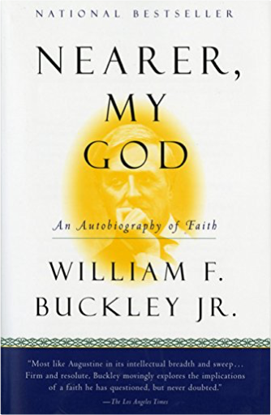 Nearer, My God: An Autobiography of FaithWilliam F. Buckley Jr. This is the story of one man's faith, told with unrivaled reflection and candor. William F. Buckley, Jr., was raised a Catholic. As the world plunged into war, and as social mores changed dramatically around him, Buckley's faith — a most essential part of his make-up — sustained him. In Nearer, My God, Buckley examines in searching detail the meaning of his faith, and how his life has been shaped and sustained by religious conviction.
In highly personal terms, and with the wit and acuity for which he is justly renowned, Buckley discusses vital issues of Catholic doctrine and practice, and in so doing outlines for the reader both the nature of CathoLic faith and the essential role of religious belief in everyday life. In powerfully felt prose, he contributes provocatively and intelligently to the national interest in the nature of religion, the Church, and spiritual development. Nearer, My God is sure to appeal to all readers who have felt the stirrings of their own religious faith, and who want confirmation of their beliefs or who are seeking a guide to understanding their own souls.
The renowned social and political commentator, William F. Buckley Jr., turns to a highly personal subject — his faith. And he tells us the story of his life as a Catholic Christian. "Nearer, My God" is the most reflective, poignant, and searching of Bill Buckley's many books. In the opening chapters he relives his childhood, a loving, funny, nostalgic glimpse into pre-World War II America and England. He speaks about his religious experiences to a world that has changed dramatically. He is unafraid of revealing the most personal side of his faith. He describes, in his distinctive style, the intimacy of a trip to Lourdes, the impact on him of the searing account by Maria Valtorta of the Crucifixion, the ordination of his nephew into the priesthood, and gives a moving account of his mother's death. And there is humor, as Buckley gives a unique, hilarious view of a visit to the Vatican with Malcolm Muggeridge, Charlton Heston, Grace Kelly, and David Niven. Personal though this book is, Buckley has gone to others to examine new perspectives, putting together his own distinguished 'Forum' and leaning on the great literature of the past to illustrate his thinking on contemporary Catholic and Christian issues. Migrations of the Holy: God, State, and the Political Meaning of the ChurchWilliam T. Cavanaugh Whether one thinks that “religion” continues to fade or has made a comeback in the contemporary world, there is a common notion that “religion” went away somewhere, at least in the West. But William Cavanaugh argues that religious fervor never left — it has only migrated toward a new object of worship. In Migrations of the Holy he examines the disconcerting modern transfer of sacred devotion from the church to the nation-state. In these chapters Cavanaugh cautions readers to be wary of a rigid separation of religion and politics that boxes in the church and sends citizens instead to the state for hope, comfort, and salvation as they navigate the risks and pains of mortal life. When nationality becomes the primary source of identity and belonging, he warns, the state becomes the god and idol of its own religion, the language of nationalism becomes a liturgy, and devotees willingly sacrifice their lives to serve and defend their country. Cavanaugh urges Christians to resist this form of idolatry, to unthink the inevitability of the nation-state and its dreary party politics, to embrace radical forms of political pluralism that privilege local communities — and to cling to an incarnational theology that weaves itself seamlessly and tangibly into all aspects of daily life and culture. “William Cavanaugh continues to provide leadership and vision in the field of political theology. He addresses essential questions about the religious status of the nation-state, the political character of the church, and how the tradition of Christian political thought might be brought to bear upon contemporary politics. . . . Unfolds a theological response to present political conditions and a political response to our theological condition.” — Luke Bretherton King’s College London “Another vigorous — but distinct — voice in the burgeoning conversation about the role of religion generally and the church specifically in political life. . . . Worth a careful read.” — Robert Benne 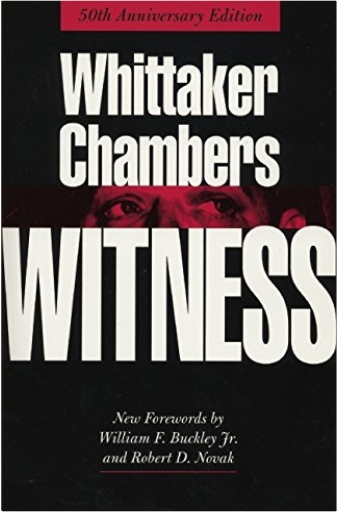 WitnessWhittaker Chambers First published in 1952, Witness was at once a literary effort, a philosophical treatise, and a bestseller. Whittaker Chambers had just participated in America's trial of the century in which Chambers claimed that Alger Hiss, a full-standing member of the political establishment, was a spy for the Soviet Union. This poetic autobiography recounts the famous case, but also reveals much more. Chambers' worldview—e.g. "man without mysticism is a monster"—went on to help make political conservatism a national force. 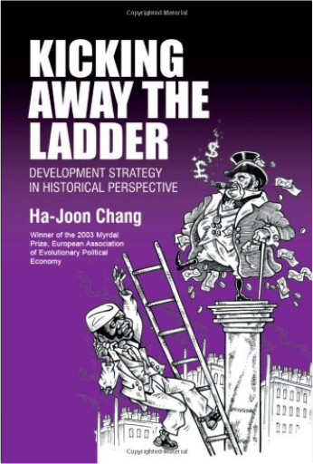 Kicking Away the Ladder: Development Strategy in Historical PerspectiveHa-Joon Chang How did the rich countries really become rich? In this provocative study, Ha-Joon Chang examines the great pressure on developing countries from the developed world to adopt certain 'good policies' and 'good institutions', seen today as necessary for economic development. His conclusions are compelling and disturbing: that developed countries are attempting to 'kick away the ladder' with which they have climbed to the top, thereby preventing developing countries from adopting policies and institutions that they themselves have used. 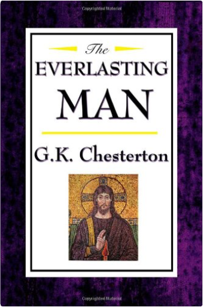 The Everlasting ManG. K. Chesterton, Gilbert K. Chesterton Here is the book that converted C. S. Lewis from atheism to Christianity. This history of mankind, Christ, and Christianity is to some extent a conscious rebuttal of H. G. Wells' Outline of History, which embraced both the evolutionary origins of humanity and the mortal humanity of Jesus. Whereas Orthodoxy detailed Chesterton's own spiritual journey, this book illustrates the spiritual journey of humanity, or at least of Western civilization. A book for both mind and spirit. 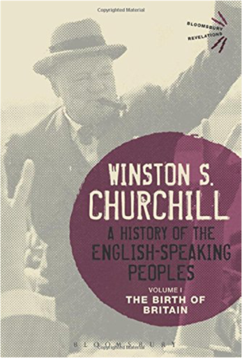 A History of the English-Speaking Peoples Volume I: The Birth of BritainSir Winston S. Churchill "This history will endure; not only because Sir Winston has written it, but also because of its own inherent virtues - its narrative power, its fine judgment of war and politics, of soldiers and statesmen, and even more because it reflects a tradition of what Englishmen in the hey-day of their empire thought and felt about their country's past." The Daily Telegraph
Spanning four volumes and many centuries of history, from Caesar's invasion of Britain to the start of World War I, A History of the English-Speaking Peoples stands as one of Winston S. Churchill's most magnificent literary works. Begun during Churchill's 'wilderness years' when he was out of government, first published in 1956 after his leadership through the darkest days of World War II had cemented his place in history and completed when Churchill was in his 80s, it remains to this day a compelling and vivid history.
The first volume - The Birth of Britain - tells the story of the formation of the British state, from the arrival of Julius Caesar and the Roman Empire through the invasions of the Vikings and the Normans, the signing of the Magna Carta and establishment of the mother of parliaments to the War of the Roses. 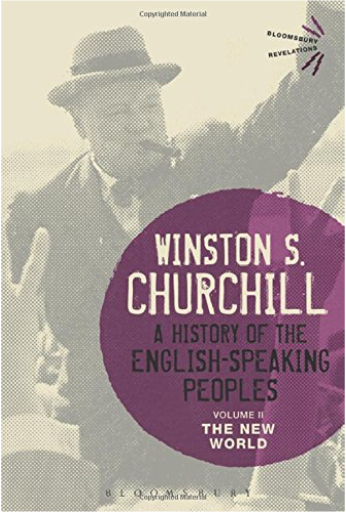 A History of the English-Speaking Peoples Volume II: The New WorldSir Winston S. Churchill "This history will endure; not only because Sir Winston has written it, but also because of its own inherent virtues - its narrative power, its fine judgment of war and politics, of soldiers and statesmen, and even more because it reflects a tradition of what Englishmen in the hey-day of their empire thought and felt about their country's past." The Daily Telegraph
Spanning four volumes and many centuries of history, from Caesar's invasion of Britain to the start of World War I, A History of the English-Speaking Peoples stands as one of Winston Churchill's most magnificent literary works. Begun during Churchill's 'wilderness years' when he was out of government, first published in 1956 after his leadership through the darkest days of World War II had cemented his place in history and completed when Churchill was in his 80s, it remains to this day a compelling and vivid history.
The second volume – The New World – explores the emergence of Britain on the world stage and a turbulent period at home: from Henry VIII's break with Rome and the English Reformation to the fending off of the Spanish Armada and the schism between parliament and crown that led to the civil war, the fall and rise of the monarchy and the rule of Oliver Cromwell. The book also covers the historic journey of the 'Mayflower' that saw the English-speaking peoples' arrival in the Americas. 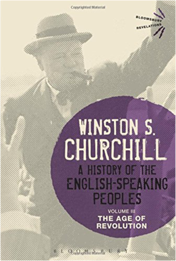 A History of the English-Speaking Peoples Volume III: The Age of RevolutionSir Winston S. Churchill "This history will endure; not only because Sir Winston has written it, but also because of its own inherent virtues - its narrative power, its fine judgment of war and politics, of soldiers and statesmen, and even more because it reflects a tradition of what Englishmen in the hey-day of their empire thought and felt about their country's past." The Daily Telegraph
Spanning four volumes and many centuries of history, from Caesar's invasion of Britain to the start of World War I, A History of the English-Speaking Peoples stands as one of Winston Churchill's most magnificent literary works. Begun during Churchill's 'wilderness years' when he was out of government, first published in 1956 after his leadership through the darkest days of World War II had cemented his place in history and completed when Churchill was in his 80s, it remains to this day a compelling and vivid history.
In The Age of Revolution – the third volume of Churchill's history – Churchill charts the rise of Great Britain as a world power and the long rivalry with France, the shadow of the French Revolution, the rise of Napoleon and his defeat at Waterloo. The volume also covers the rise of the American colonies, their triumphant overthrow of British rule in the War of Independence and the first great generation of American leaders: Washington, Adams and Jefferson. 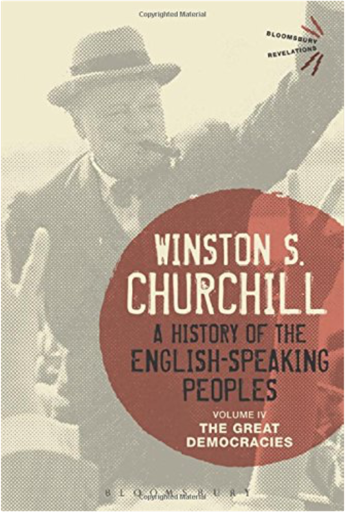 A History of the English-Speaking Peoples Volume IV: The Great DemocraciesSir Winston S. Churchill "This history will endure; not only because Sir Winston has written it, but also because of its own inherent virtues - its narrative power, its fine judgment of war and politics, of soldiers and statesmen, and even more because it reflects a tradition of what Englishmen in the hey-day of their empire thought and felt about their country's past." The Daily Telegraph
Spanning four volumes and many centuries of history, from Caesar's invasion of Britain to the start of World War I, A History of the English-Speaking Peoples stands as one of Winston Churchill's most magnificent literary works. Begun during Churchill's 'wilderness years' when he was out of government, first published in 1956 after his leadership through the darkest days of World War II had cemented his place in history and completed when Churchill was in his 80s, it remains to this day a compelling and vivid history.
The Great Democracies is the fourth and final volume of Churchill's history. Here, Churchill reaches the modern era. For Britain, this was the high Victorian era of Palmerston, Gladstone and Disraeli, an age of free trade and imperialism as the British spread to Africa, Australia and New Zealand. Meanwhile the fledgling republic in America endured the great crisis of the Civil War to take its first steps on the road to becoming the world superpower that endures to this day. 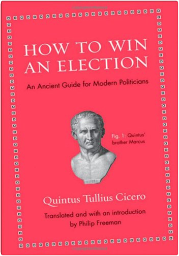 How to Win an Election: An Ancient Guide for Modern PoliticiansQuintus Tullius Cicero How to Win an Election is an ancient Roman guide for campaigning that is as up-to-date as tomorrow's headlines. In 64 BC when idealist Marcus Cicero, Rome's greatest orator, ran for consul (the highest office in the Republic), his practical brother Quintus decided he needed some no-nonsense advice on running a successful campaign. What follows in his short letter are timeless bits of political wisdom, from the importance of promising everything to everybody and reminding voters about the sexual scandals of your opponents to being a chameleon, putting on a good show for the masses, and constantly surrounding yourself with rabid supporters. Presented here in a lively and colorful new translation, with the Latin text on facing pages, this unashamedly pragmatic primer on the humble art of personal politicking is dead-on (Cicero won)—and as relevant today as when it was written.
A little-known classic in the spirit of Machiavelli's Prince, How to Win an Election is required reading for politicians and everyone who enjoys watching them try to manipulate their way into office. 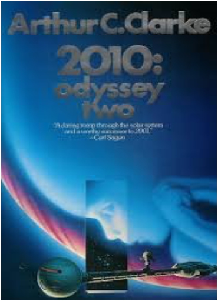 2010: Odyssey Two.Arthur C. Clarke 2001: A Space Odyssey shocked, amazed, and delighted millions in the late 1960s. An instant book and movie classic, its fame has grown over the years. Yet along with the almost universal acclaim, a host of questions has grown more insistent through the years, for example: who or what transformed Dave Bowman into the Star-Child? What alien purpose lay behind the monoliths on the Moon and out in space? What could drive HAL to kill the crew? Now all those questions and many more have been answered, in this stunning sequel to the international bestseller. Cosmic in sweep, eloquent in its depiction of Man's place in the Universe, and filled with the romance of space, this novel is a monumental achievement and a must-read for Arthur C. Clarke fans old and new. From Carl Sagan, "A daring romp through the solar system and a worthy successor to 2001." |

 Made with Delicious Library
Made with Delicious Library